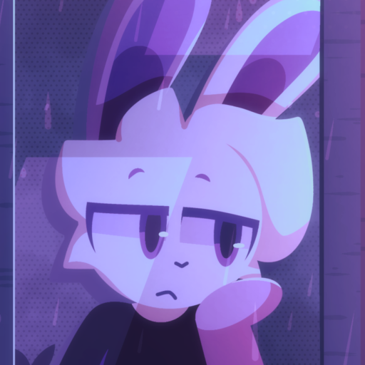

ash's corner
hiii
welcome to my website on the internet!
please remember, this website is in construction!
in the mean time, care to leave nice words in the guestbook?
about
my name is jack, but i go by ash online. i don't know what i like better, but you can call me both.
pronouns are all over the place with me. i don't know them either. just use whatever you see fits for me :)
i'm passionate about cybersecurity, i like to code, and i love to play the guitar.
i'm also currently in high school, and also attending a psuedo trade school for cybersecurity. it's cool shit and i've been having a great time. i've never been in a class where i can do things that i'm passoniate about. i've been close with computer science but not close enough. i did enjoy my computer science though because of my all time favorite teacher. thanks for giving me a great year teach :)
if you wanna learn more about me or this website, you can here
contact
when you can, please use my GPG key with email and discord. the discord link will take you to my server but my username is also listed needed.
you should also use the things in the order listed. use the one on the bottom the least and the ones on top the most.
my links and stuff
made with
❯ hyfetch
' ash@ashey.me
'A' ---------------
'ooo' OS: Artix Linux
'ookxo' Host: ThinkPad 490s
`ookxxo' Kernel: linux-zen
'. `ooko' Editor: vim
'ooo`. `oo' DE: KDE Plasma
'ooxxxoo`. `' Terminal: alacritty
'ookxxxkooo.` . CPU: Intel Core i7-8665U
'ookxxkoo'` .'oo' GPU: Intel UHD Graphics 620
'ooxoo'` .:ooxxo' Memory: 14.90GiB
'io'` `'oo'
'` `'
webrings!
my last.fm
counters
counters not loading? disable your adblocker to view them. it's nothing crazy, it's just fc2.com. it's all good if you don't wanna disable your adblocker.
hit counts
currently online
hi eepy emma
you can be on my website now

donate
please consider donating a few bucks. i don't care if you do or don't, but any cent is appreciated and will go to good things :)
here's my XMR address. that's the only way you can donate to me currently.
86osTRsCuaZQVsKtC39kMZFRxRwWvsKFfCU1DbHpNviujUe8fxCRsYF2kQxcFA9tZN34N3YU8P6byJnFBxjDDLm74L1AABt